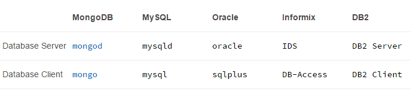
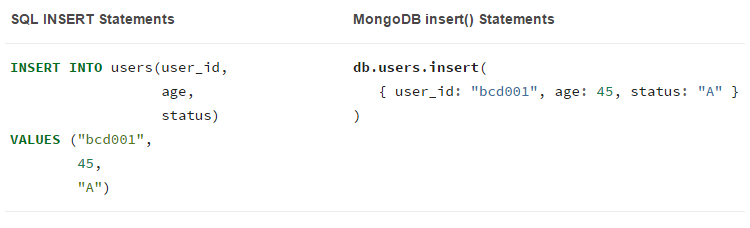
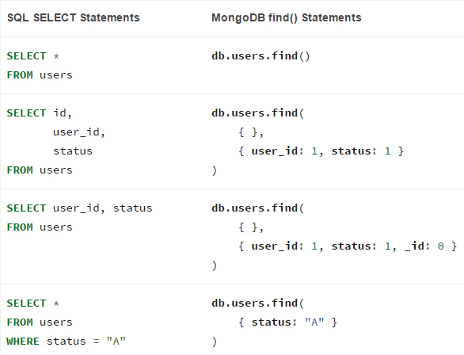
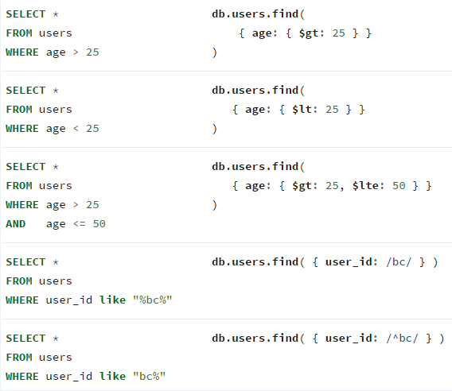
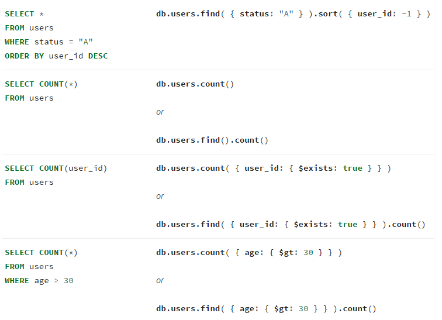
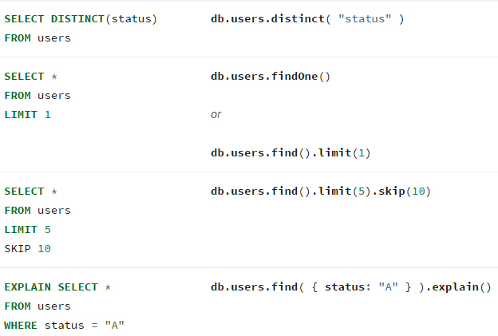
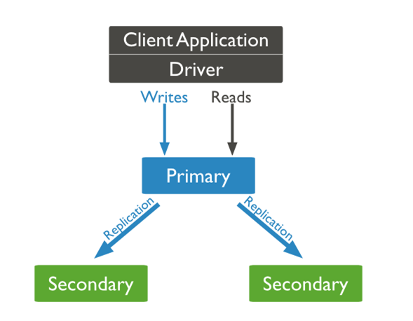
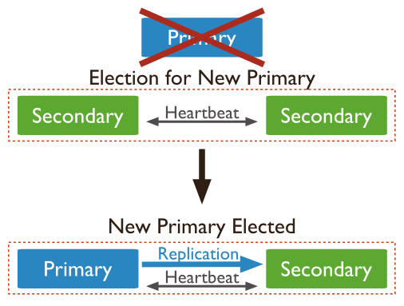
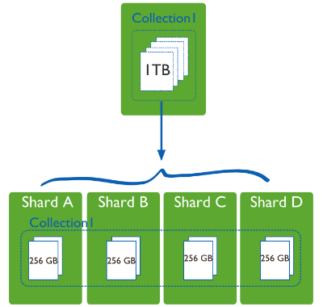
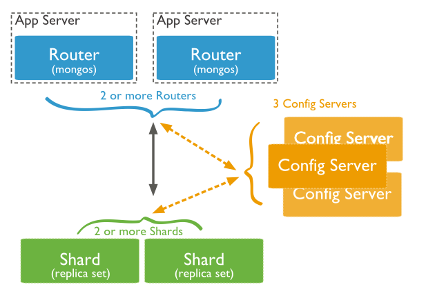

MongoDB
Created by Cherry Lee / @Happy Tech Group
Contents
- Introduction
- Replication
- Sharding
Introduction
MongoDB is an open-source document database that provides high perfotmance, high availability, and automatic scaling.
Key Features
- High Performance
- High Availability
- Automatic Scaling
BSON
A record in MongoDB is a document, which is a data structure composed of field and value pairs. MongoDB documents are similar to JSON objects.

SQL to MongoDB

SQL to MongoDB Aggregation

Executable
Create and Drop

Insert
Select
Select
Select
Select
Start
Start MongoDB with a configuration file.
mongod --config /etc/mongodb.conf
Replication
A replica set is a group of mongod instances that host the same data set.
Replication set Members
- Primary
- Secondary
- Arbiter
Primary
- The only member receives write operations
- Only one
Secondary
- Maintain a copy
- Can become a primary
- One or more secondaries
- Specific: priority 0; hidden; delayed
Priority 0 Secondary
- Can not become primary
Hidden Secondary
- Must be priority 0
- Cannot read
- For backup
Delayed Secondary
- Must be hidden
- Keep an earlier or delayed state of the set
- For rollback
Replication Set Election
Election Triggering Events
An election happens when:
- The initiation of a new replica set
- A secondary loses contact with a primary
- A primary step down
Election Factors and Conditions
- Heartbeats
- Priority
- Optime
- Connections
- Network Partitions
Sharding
Sharding is a method fot storing data across multiple machines.
Components
Shards
- Hold a subset of a collection's data
- Each shard is a mongod instance or a replication set
Query Routers
- Process and target operations to shards
- Return results to clients
- Each query router is a mongos instance
Config Servers
- Store the cluster's metadata which maps chunks to shards
- The query router uses metadata to target opeartions to specific shards
- Each config server is a mongod instance
Shard Keys
The shard key determines the distribution of the collection’s documents among the cluster’s shards.

Shard Collection Balancing
Balancing is the process MongoDB uses to distribute data of a collection evenly across a cluster.

Chunk Migration
Chunk migration moves the chunks of a shard collection from one shard to another and is part of the balancer process.

Chunk Splits
As chunks grow beyond the specified chunk size a mongos instance will attempt to split the chunk in half.

More
- MongoDB Org
- MongoDB In Action
- MongoDB:The.Definitive.Guide
The End
Created by Cherry Lee / @Happy Tech Group